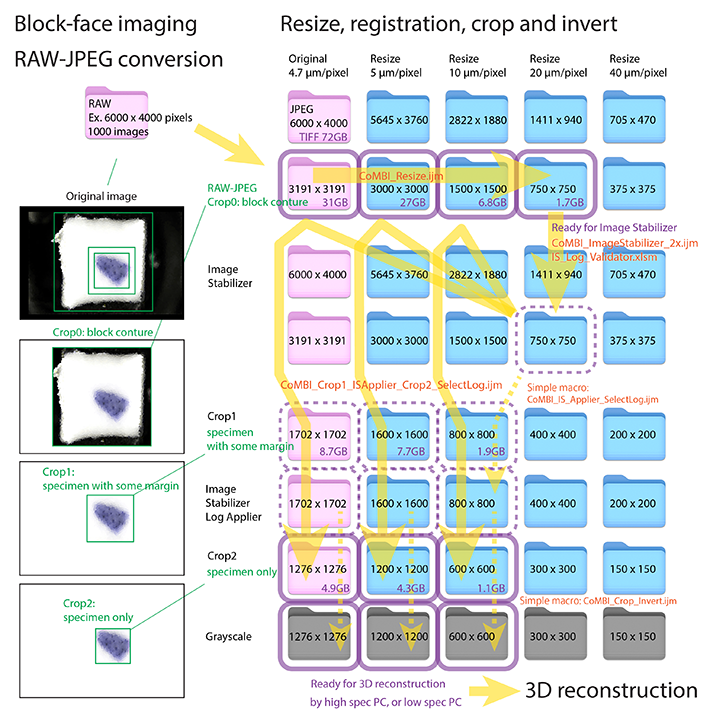

Overview of Image Processing/画像処理の概要

Overview of image processing
This page lists the image processing steps and the files generated at each step.
画像処理とそれで生成されるファイルを列記します。
-
Imaging/撮影
Serial images in RAW, original data, 12 bit or 16 bit, regulary 10 to 50 GB, so heavy !
RAW形式の連続画像、元データ、12bitや16bit、10-50ギガバイト、重い。
-
RAW-JPEG conversion/変換
Serial images in JPEG, 8 bit color, less than 1 GB but still heavy for processing. The conversion app can process serial images identically and sequentially.
JPEG形式の連続画像、8bit カラー、保存容量は1GB程度に収まる。しかし処理する際は、非圧縮相当の容量として扱われるので、まだまだ重くて扱いづらい。RAW現像アプリで、連続画像の同一調整、一括変換が可能です。
-
Resize/縮小
Resized serial images in JPEG, 8 bit color or grayscale. Make pixel size 5, 10, 20, 40 etc µm/pixel, images size between 500x500 to 1000x1000. Lighten the data size for image registration (next step). Automatic execution is possible by ImageJ macro.
縮小したJPEG連続画像、カラーでもグレーでも、ズレ補正のために、軽くする、ついでにキリの良いピクセルサイズで扱いやすい。たとえば5, 10, 20, 40 µm/pixelの連続画像をつくっておく。小さいほうの連続画像が500x500 ~ 1000x1000 pixelsになるまで、縮小する。自動処理が可能でImageJ macroを使います。
-
Image registration/ズレ補正
This step creates registrated serial images in JPEG, and a Log file recording distance value used for registration. In CoMBI-C, R (cryostat, or rotating type), a moving block is imaged, so there may be vertical misalignment between images. For CoMBI-S (sliding type), this step is not required. The block circumference is used as the reference for registration. Registration is done using a light image series (roughly 500x500 to 1000x1000). The amount of data that can be handled depends on the installed memory size. In my experience, registration is often done using serial images with a pixel size of 40 µm/pixel or 20 µm/pixel. When applying registration to a high-resolution image, first registrate a small serial image, and then apply the registration to the a large (high-resolution) serial image using a Log file. Semi-automatic excecution is possible by ImageJ macro and Excel VBA.
ズレ補正されたJPEG連続画像、Logファイル（ズレ補正での移動距離の記録）が生成されます。CoMBI_クリオスタットなど回転式ミクロトームでは、動いているブロックを撮影するので、画像間で上下にズレていることがあり、これを補正します。CoMBI_滑走式ミクロトームでは、このステップは不要です。補正の基準として、ブロック外周を利用します。軽い画像シリーズ（おおよそ500x500〜1000x1000、最大枚数はおおよそ2000枚まで）で行う。扱えるデータ量は、搭載メモリに依存する。経験上、ピクセルサイズを40 µm/pixelや20 µm/pixelにした連続画像で行うことが多い。高精細画像に補正をかけるときは、いったん軽い画像でズレ補正し、その補正時の移動値（Logファイル）を利用して高精細画像に補正を適用できる。自動処理が可能で、ImageJ macroとExcel VBAを使います。
-
Crop/切り抜き
Croped serial images in JPEG. color and grayscale. The above registration process required the block periphery, but it can/should be removed to lighten the data for the 3D reconstruction.
必要なところ（試料）だけを切り抜いた連続画像（カラー、グレースケール、ピクセルサイズ各種）。上記のズレ補正ではブロック外周が必要でしたが、ズレ補正に成功すれば、次の3Dイメージングのために、外周の領域は除去して、データを軽くします。自動処理が可能で、ImageJ macroを使います。
-
3D reconstruction/3D再構築
JPEG serial images (color, gray, and registrated) can be loaded into a 3D application; 3D slicer saves the serial images and various operation records as a single data set; Horos converts the data to DICOM and stores it in the "Horos Database" folder.
Grayscale sequential images can be used for MPR and VR, while color sequential images can only be used for MPR. Still images and movies can be exported from each 3D reconstructed image.
In 3D slicer, you can choose saving formats among two type; the image data and segmentation data as separate files, or as an integrated project file. I prefer to use 3D slicer for segmentation and save as an integrated file. In OsiriX/Horos, segmentation data will be saved as separate files. When doing segmentation in Horos/OsiriX, the number of files to be saved increases. For example, when I marked 9 lymph nodes, I had to save 9 files. Managing them bothered me.
JPEG連続画像（カラー、グレー、ズレ補正済み）を3Dアプリに読み込ませる。3D slicerなら、連続画像と各種操作記録を一体化したデータで保存する。Horosなら、DICOMに変換されて、"Horos Database"フォルダに、蓄積される。
グレースケール連続画像はMPR, VRに利用し、カラー連続画像はMPRのみで利用できます。それぞれの3D再構築像から、静止画や動画を書き出せます。
セグメンテーションとは、マークした領域だけを3D画像にすること。3D slicerでは、保存形式は二通りから選べます。画像データやセグメンテーションデータを個別ファイルとして保存するやり方と、それらをプロジェクトとして一体ファイルとして保存するやり方、です。一体型は重くなりますが、ファイル管理の面倒がなくなるので、気に入っています。Horos/OsiriXでセグメンテーションをやると、保存すべきファイルが増えていきます。例えば、「リンパ節を9個、マークできた」となると、9個のファイルができます。ちゃんと管理すればいいですが、どれがどれだか、ネーミングに困ります。